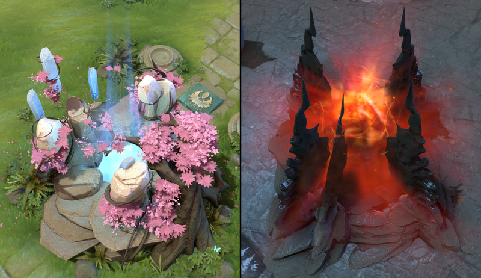
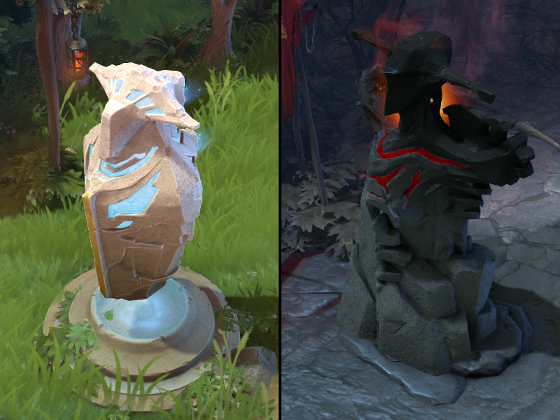
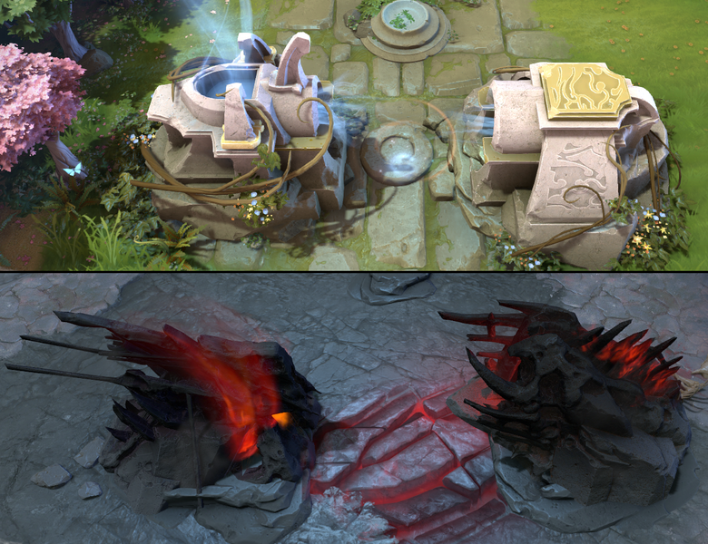
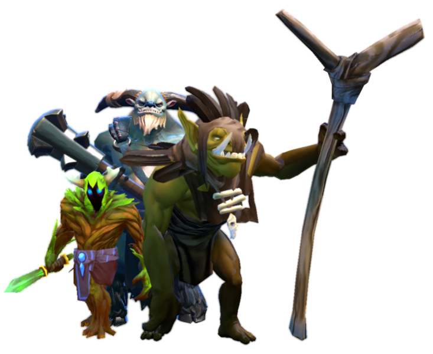
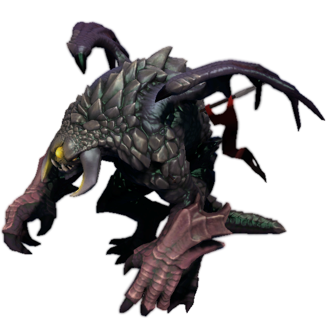

1. The Ancients
2. Towers
3. Barracks
4. The Creeps
5. Roshan
Objective
The term ‘Dota’ stands for ‘Defense of the Ancients,’ and that’s precisely what the game is all about. There are two teams of five players each, with the Radiant occupying the southwestern half of the map and the Dire occupying the northwestern half. You and the four other players on your team are tasked with destroying the enemy’s Ancient, which is the central structure in their base, all while protecting your own.
There are three main avenues leading to each base, called the lanes, that are protected by a line of towers and continually spawning waves of NPC units called creeps. Both teams will essentially spend most of their time trying to take control of the lanes and the map to eventually push up to the enemy base.
You and the nine other players in the game are each given control of a hero — who all have their own unique set of attributes, abilities, strengths, and weaknesses — and must team up to get strong enough to besiege the enemy base and take down their Ancient.
The Ancients
The Ancients are the primary objective of the game, as whichever team destroys their enemy’s Ancient wins the game. While they can’t defend themselves, they are protected by two towers of the strongest tier, oh and an army of creeps and heroes too.
It should go without saying that taking down an Ancient is no easy feat. You and your team should be able coordinate an effective defense of your own Ancient as well as a plan of attack against that of the enemy if you want to win the game.
Towers
Every lane for each side is fortified with three tiers of towers that progressively get stronger the closer they are to a team’s base, as well as a set barracks, often shortened as ‘rax.’
The tier one tower is located at the end of each lane near the point where the opposing creep waves meet, the tier two tower is at the halfway point of each lane, while the tier three tower is located above each ramp leading into a team’s base. There is also a fourth tier of two towers that protect each team’s Ancient.
Barracks
The barracks are buildings that, when destroyed, will make the opposing creeps in that lane stronger. There are two kinds of barracks, the melee and the ranged, corresponding to the first two types of lane creeps.
The Melee Barracks is more robust and is able to slowly regenerate its health, while the Ranged Barracks is easier to take down and has no health regeneration. Barracks are invulnerable until the tier three tower guarding them is destroyed.
The Creeps
While the heroes fighting for both teams are the primary driving forces in the war of the Ancients, NPC units called ‘creeps’ form the armies of both sides and populate the map. More than just being a never-ending tide of units clashing in the lanes and besieging towers, creeps are also the primary source of gold and experience for heroes.
Roshan
Roshan the Immortal is the most powerful neutral creep in Dota 2, located in a pit in the middle of the northeastern part of the river.
Roshan is not like the other neutral creeps that can be easily taken down with a few attacks. He outclasses any hero one-on-one in most situations, and it usually takes an entire team to bring him down. Any attempt to take on Roshan needs the correct timing and approach since he is one of the major deciding factors in the game.
A team who can successfully take down Roshan not only earns a sizable bounty of gold and experience, but also a variety of rewards. The first is the Aegis of the Immortal, which is dropped every time Roshan is slain. Whoever holds the Aegis will come back to life with full health and mana once they are killed, though Roshan will reclaim it once he respawns.